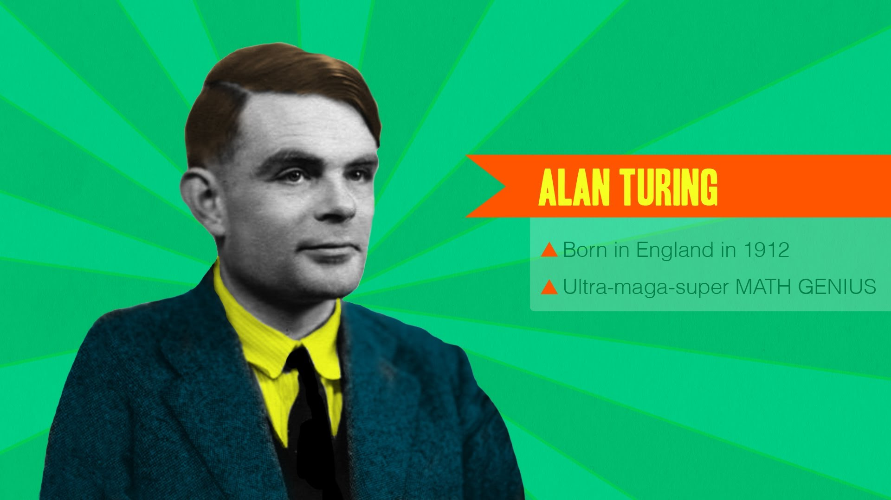

Alan Mathison Turing OBE FRS ( 23 June 1912 – 7 June 1954) was an English computer scientist, mathematician, logician, cryptanalyst, philosopher, and theoretical biologist. Turing was highly influential in the development of theoretical computer science, providing a formalisation of the concepts of algorithm and computation with the Turing machine, which can be considered a model of a general purpose computer.Turing is widely considered to be the father of theoretical computer science and artificial intelligence. During the Second World War, Turing worked for the Government Code and Cypher School (GC&CS) at Bletchley Park, Britain's codebreaking centre that produced Ultra intelligence. For a time he led Hut 8, the section which was responsible for German naval cryptanalysis. Here he devised a number of techniques for speeding the breaking of German ciphers, including improvements to the pre-war Polish bombe method, an electromechanical machine that could find settings for the Enigma machine. Turing played a pivotal role in cracking intercepted coded messages that enabled the Allies to defeat the Nazis in many crucial engagements, including the Battle of the Atlantic, and in so doing helped win the war.[11][12] Counterfactual history is difficult with respect to the effect Ultra intelligence had on the length of the war,[13] but at the upper end it has been estimated that this work shortened the war in Europe by more than two years and saved over fourteen million lives.[11]
When Turing returned to Cambridge, he attended lectures given in 1939 by Ludwig Wittgenstein about the foundations of mathematics.[54] The lectures have been reconstructed verbatim, including interjections from Turing and other students, from students' notes.[55] Turing and Wittgenstein argued and disagreed, with Turing defending formalism and Wittgenstein propounding his view that mathematics does not discover any absolute truths, but rather invents them.
Cryptanalysis of the Enigma, Turing's proof, Turing machine, Turing test, Unorganised machine, LU decomposition
